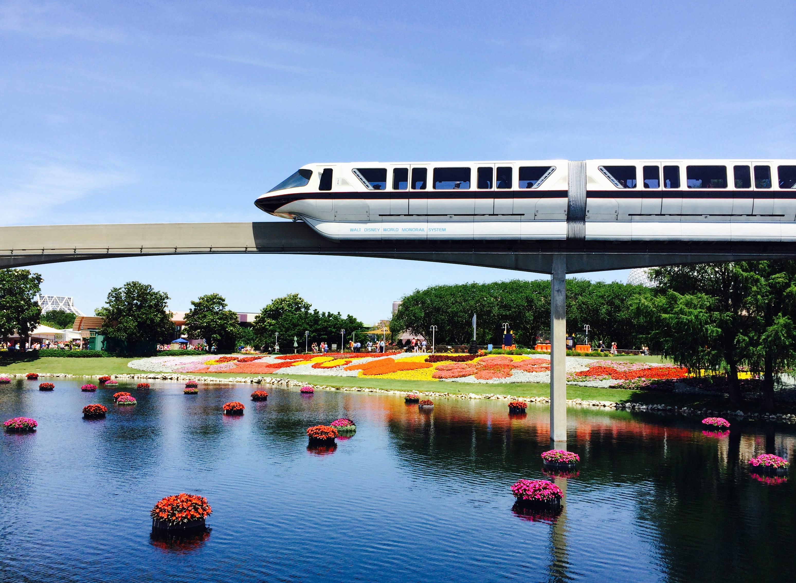
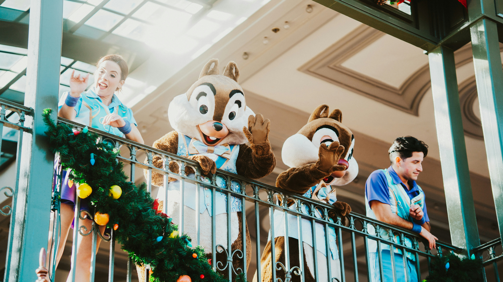

The Walt Disney World Resort (also known as Walt Disney World or Disney World) is an entertainment resort complex located about 20 miles (32 km) southwest of Orlando, Florida, United States. Opened on October 1, 1971, the resort is operated by Disney Experiences, a division of The Walt Disney Company. The property covers nearly 25,000 acres (39 sq mi; 101 km2), of which half has been developed.[4] Walt Disney World contains numerous recreational facilities designed to attract visitors for an extended stay, including four theme parks, two water parks, four golf courses, conference centers, a competitive sports complex and a shopping, dining, and entertainment complex. Additionally, there are 19 Disney-owned resort hotels and one camping resort on the property, and many other non-Disney-operated resorts on and near the property.
In 2018, Walt Disney World was the most visited vacation resort in the world, with an average annual attendance of more than 58 million.[6] The resort is the largest single-site employer in the United States,[3] the flagship destination of Disney's worldwide corporate enterprise[7] and has become a popular staple in American culture.
Theme parks
- Magic Kingdom, opened October 1, 1971
- Epcot, opened October 1, 1982
- Disney's Hollywood Studios, opened May 1, 1989
- Disney's Animal Kingdom, opened April 22, 1998
Water Parks
- Disney's Typhoon Lagoon, opened June 1, 1989
- Disney's Blizzard Beach, opened April 1, 1995
Mini-golf courses
- Fantasia Gardens, opened May 20, 1996
- Winter Summerland, opened March 12, 1999
Shopping, dining, and entertainment areas
- Disney Springs, opened March 22, 1975
- Disney's BoardWalk, opened July 1, 1996
- Flamingo Crossings, opened 2021, located off property but developed by Disney
Attendance
In the first year of opening, the park attracted 10,712,991 visitors.[86] In 2018, the resort's four theme parks all ranked in the top 9 on the list of the 25 most visited theme parks in the world: (1st) Magic Kingdom—20,859,000 visitors; (6th) Disney's Animal Kingdom—13,750,000 visitors; (7th) Epcot—12,444,000 visitors; and (9th) Disney's Hollywood Studios—11,258,000 visitors.[6] By October 2020, maximum Disney World attendance was still allowed to only remain at 25% capacity due to the COVID-19 pandemic.[30] A recent study found that reducing Magic Kingdom park capacity to 25% would result in a 54.1% reduction in annual attendance. This capacity limit causes less annual revenue, and may lower the number of visitors to the Orlando region.[87]
Operations
Transportation
The Walt Disney World Resort is serviced by Disney Transport, a complimentary mass transportation system allowing guest access across the property. The fare-free system utilizes buses, monorails, gondola lifts, watercraft, and parking lot trams.
The Walt Disney World Monorail System provides free transportation at Walt Disney World; guests can board the monorail and travel between the Magic Kingdom and Epcot, including select on-property resorts such as The Grand Floridian and The Polynesian Village. The system operates on three routes that interconnect at the Transportation and Ticket Center (TTC), adjacent to the Magic Kingdom's parking lot. Disney Transport owns a fleet of Disney-operated buses on the property, that is also complimentary for guests.[102]
A gondola lift system, dubbed Disney Skyliner, opened in 2019. The system's three lines connect Disney's Hollywood Studios and Epcot with four resort hotels.[103]
Disney Transport also operates a fleet of watercraft, ranging in size from water taxis, up to the ferries that connect the Magic Kingdom to the Transportation and Ticket Center. Disney Transport is also responsible for maintaining the fleet of parking lot trams that are used for shuttling visitors between the various theme park parking lots and their respective main entrances.
Energy use
Walt Disney World requires an estimated 1 billion kilowatt-hours (3.6 billion megajoules) of electricity annually, costing the company nearly $100 million in annual energy consumption.[106] In addition to relying primarily on fossil fuels and nuclear energy from the state's power grid, Walt Disney World has two solar energy facilities on property; a 22-acre (0.034 sq mi; 0.089 km2) Mickey Mouse-shaped solar panel farm near Epcot, and a 270-acre (0.42 sq mi; 1.1 km2) facility near Disney's Animal Kingdom.[107] The larger facility produces enough solar energy to provide electricity to two of the resort's theme parks. The sites are operated by Duke Energy and the Reedy Creek Improvement District, respectively.[107]
The entire Disney Transport bus fleet uses R50 renewable diesel fuel, obtained from used cooking oil and non-consumable food waste from the resort.[107]
Self-Government and security
Disney's security personnel are generally dressed in typical security guard uniforms, though some of the personnel are dressed as tourists in plain clothes. Since September 11, 2001, uniformed security has been stationed outside each Disney park in Florida to search guests' bags as they enter the parks. Starting April 3, 2017, bag checkpoints have been placed at Magic Kingdom's resort monorail entryways and the Transportation and Ticket Center's ferry entry points prior to embarkation as well as the walkway from Disney's Contemporary Resort. Guests arriving at the Transportation and Ticket Center by tram or tour bus will be screened at the former tram boarding areas. Guests arriving by Disney Resort hotel bus or Minnie Van have their own bag check just outside the bus stops. Guests arriving via Magic Kingdom Resort boat launch are bag checked on the arrival dock outside Magic Kingdom.[108]
Corporate culture
Walt Disney World's corporate culture uses jargon based on theatrical terminology.[117][118] For example, park visitors are always "guests", employees are called "cast members", rides are "attractions" or "experiences", cast members costumed as famous Disney characters in a way that does not cover their faces are known as "face characters", jobs are "roles", and public and nonpublic areas are respectively labeled "onstage" and "backstage".[117][118]
